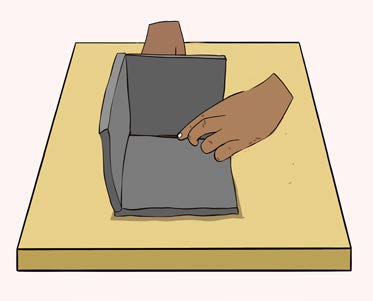
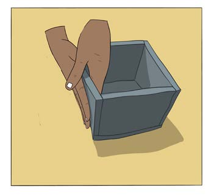
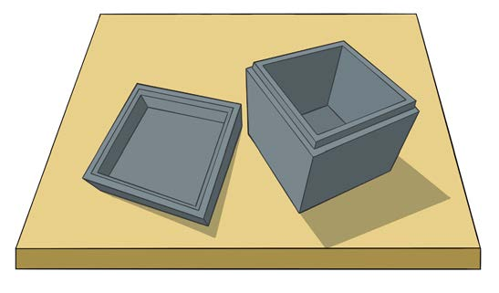

(v) Join the pieces by using clay, as shown in Figure 4;


Figure 4: Joining the pieces of the clay
(vi) Smoothen the joined parts so that they don’t leave gaps; and
(vii) Place the object in the shade for a short time to let it dry a bit.
Decorate it and put it again in the shade to dry completely, as shown in Figure 5.

Figure 5: Drying the object modelled by the slab method
Activity 1
(a) Model at least two objects using the slab method;
(b) Display in the class for discussion; then
(c) Store the objects you modelled for the art exhibition at school.